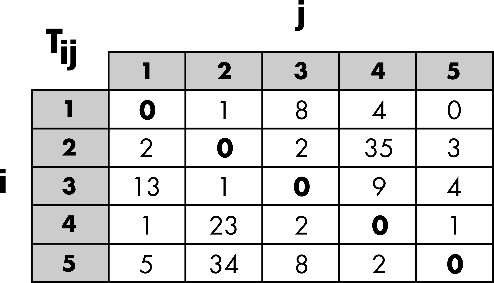
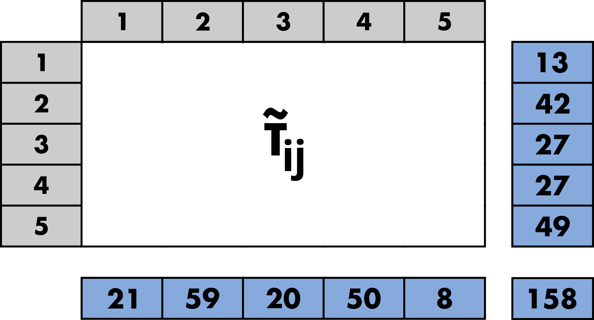
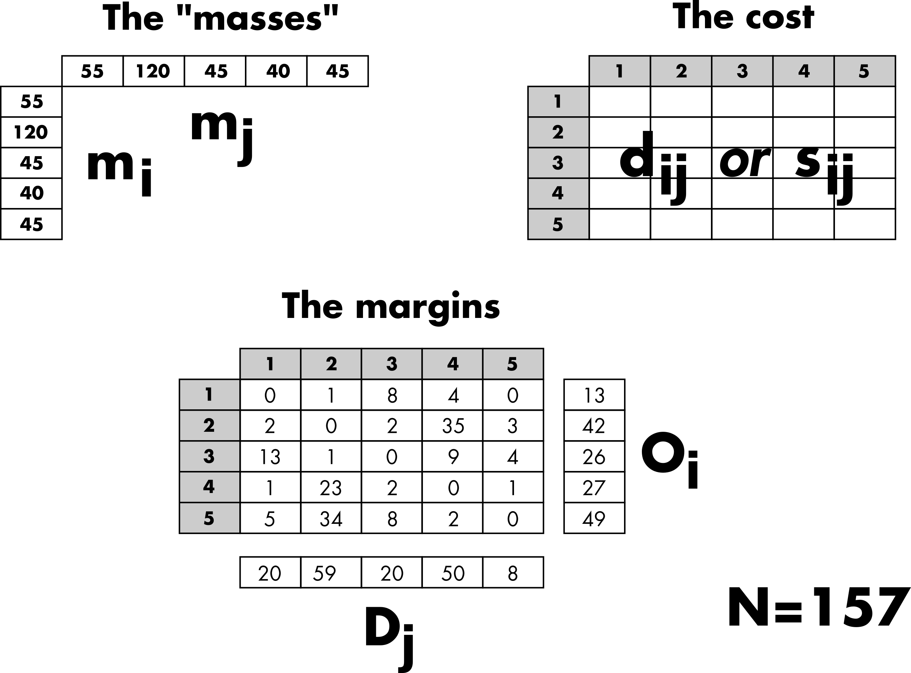
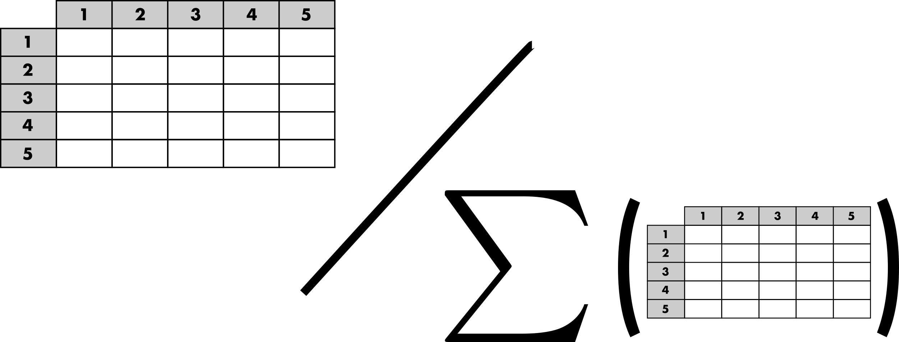
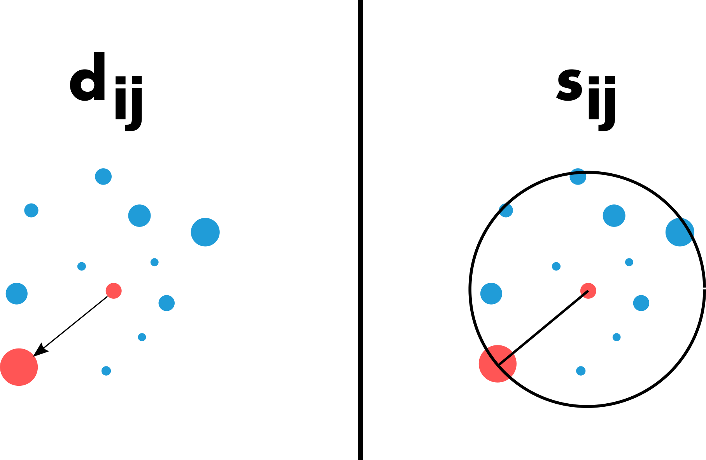
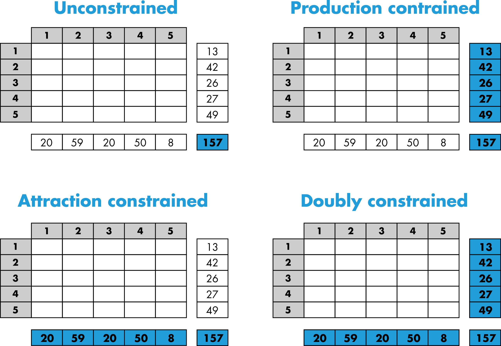
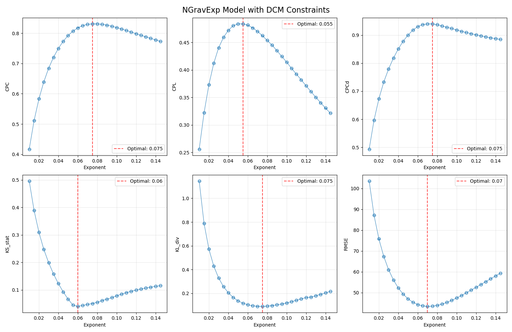

Tutorial for PyTDLM¶
This tutorial is largely derived from the one of the R package.
Introduction¶
This tutorial aims to describe the different features of the Python package PyTDLM.
The main purpose of the PyTDLM package is to provide a rigorous framework for
fairly comparing trip distribution laws and models (Lenormand et al. (2016)). This
general framework is based on a two-step approach for generating mobility flows
by separating the trip distribution law, such as gravity or intervening
opportunities, from the modeling approach used to generate flows from this law.
A short note on terminology¶
This framework is part of the four-step travel model. It corresponds to the second step, called trip distribution, which aims to match trip origins with trip destinations. The model used to generate trips or flows, and more generally the degree of interaction between locations, is often referred to as a spatial interaction model. Depending on the research area, a matrix or a network formalism may be used to describe these spatial interactions. Origin-Destination matrices (or trip tables) are common in geography or transportation, while in statistical physics or complex systems studies, the term mobility networks is usually preferred.
Origin–Destination matrix¶
The description of movements within a given area is represented by an Origin-Destination (OD) matrix. The area of interest is divided into locations, and represents the volume of flows between location and location . This volume typically corresponds to the number of trips or a commuting flow (i.e., the number of individuals living in and working in ). The OD matrix is square, contains only positive values, and may have a zero diagonal (Figure 1).

The goal is to generate a simulated OD matrix, , using only aggregated data while satisfying a set of constraints (Figure 2).

Aggregated inputs information¶
Three categories of inputs are typically considered to simulate an OD matrix (Figure 3). The masses and distances are the primary ingredients used to generate a matrix of probabilities based on a given distribution law. Thus, the probability of observing a trip from location to location depends on the masses, the demand at the origin (), and the offer at the destination (). Typically, population is used as a surrogate for demand and offer. The probability of movement also depends on the costs, which are based on the distance between locations or the number of opportunities between locations, depending on the chosen law (more details are provided in the next "Trip distribution laws" section). In general, the effect of the cost can be adjusted with a parameter.
The margins are used to generate an OD matrix from the matrix of probabilities while preserving the total number of trips (), the number of outgoing trips (), and/or the number of incoming trips () (more details are provided in the "Constrained distribution models" section).

Trip distribution laws¶
The purpose of a trip distribution law is to estimate the probability that, out of all the possible travels in the system, there is one between location and location . This probability is asymmetric in and , as are the flows themselves. It takes the form of a square matrix of probabilities. This probability is normalized across all possible pairs of origins and destinations, such that . Therefore, a matrix of probabilities can be obtained by normalizing any OD matrix (Figure 4).

As mentioned in the previous section, most trip distribution laws depend on the demand at the origin (), the offer at the destination (), and a cost to move from to . There are two major approaches for estimating the probability matrix. The traditional gravity approach, in analogy with Newton's law of gravitation, is based on the assumption that the amount of trips between two locations is related to their populations and decays according to a function of the distance between locations. In contrast to the gravity law, the laws of intervening opportunities hinge on the assumption that the number of opportunities between locations plays a more important role than the distance (Lenormand et al. (2016)). This fundamental difference between the two schools of thought is illustrated in Figure 5.

It is important to note that the effect of the cost between locations (distance or number of opportunities) can usually be adjusted with a parameter, which can be calibrated automatically or by comparing the simulated matrix with observed data.
Constrained distribution models¶
The purpose of the trip distribution models is to generate an OD matrix by drawing at random trips from the trip distribution law respecting different level of constraints according to the model. We considered four different types of models in this package. As can be observed in Figure 6, the four models respect different level of constraints from the total number of trips to the total number of out-going and in-coming trips by locations (i.e. the margins).

More specifically, the volume of flows is generated from the matrix of probability with multinomial random draws that will take different forms according to the model used (Lenormand et al. (2016)). Therefore, since the process is stochastic, each simulated matrix is unique and composed of integers. Note that it is also possible to generate an average matrix from the multinomial trials.
Goodness-of-fit measures¶
Finally, the trip distribution laws can be calibrated, and both the trip distribution laws and models can be evaluated by comparing a simulated matrix with the observed matrix . These comparisons rely on various goodness-of-fit measures, which may or may not account for the distance between locations. These measures are described above.
Common Part of Commuters (CPC)¶
Gargiulo et al. (2012), Lenormand et al. (2012), Lenormand et al. (2016)
Root Mean Square Error (RMSE)¶

Kullback–Leibler divergence (KL)¶
Kullback & Leibler (1951)
Common Part of Links (CPL)¶
Lenormand et al. (2016)
Common Part of Commuters based on the disance (CPC_d)¶
Let us consider (and ) the sum of observed (and simulated) flows at a distance comprised in the bin .
Lenormand et al. (2016)
Kolmogorv-Smirnov statistic and p-value (KS).¶
These measures, described in Massey (1951), are based on the observed and simulated flow distance distributions.
Example of commuting in Kansas¶
Data¶
In this example, also provided as the basic_usage.py script, we will use data on commuting trips between United States counties in 2000 from the United State Census Bureau (data available online here) to illustrate
the main functions of the package.
The masses and margins are contained in the Inputs.csv file.
import os
import gzip
import numpy as np
import pandas as pd
import matplotlib.pyplot as plt
from time import perf_counter
from datetime import timedelta
from TDLM import tdlm
data_path = os.getcwd() + os.sep + "data_US" + os.sep
# Sample data - replace with your actual data
print("Setting up example data...")
#Inputs (mi, mj, Oi and Dj)
inputs = pd.read_csv(data_path + "Inputs.csv", sep=";")
# Origin and destination masses (population, employment, etc.)
mi = inputs.iloc[:, 0].values # Number of inhabitants at origin (mi)
mj = inputs.iloc[:, 1].values # Number of inhabitants at destination (mj)
# Trip constraints (for constrained models)
Oi = inputs.iloc[:, 2].values.astype(int) # Number of out-commuters (Oi)
Dj = inputs.iloc[:, 3].values.astype(int) # Number of in-commuters (Dj)
The distance matrix is zero-diagonal square matrix of floats. Each element of the matrix represents the distance in kilometers between a pair of US Kansas counties.
# Distance matrix dij (size n x n)
# Locale detection (whether decimal place is marked by "." or ",")
decimal = '.'
with gzip.open(data_path + "Distance.csv.gz", 'rt') as f:
_ = f.readline() #discard header
for line in f:
if ',' in line:
decimal = ','
break
dij = pd.read_csv(data_path + "Distance.csv.gz", compression='gzip', sep=";", decimal=decimal, header=0)
dij = dij.values.astype(float)
The observed OD matrix is a zero-diagonal square matrix of integers. Each element of the matrix represents the number of commuters between a pair of US Kansas counties.
# Observed OD matrix Tij (size n x n)
Tij_df = pd.read_csv(data_path + "OD.csv", sep=";", header=0)
Tij_observed = Tij_df.values.astype(int)
The function extract_opportunities computes the number of opportunities between pairs of
locations. For a given pair of locations, the number of opportunities between
the origin and the destination is based on the number of opportunities within
a circle of radius equal to the distance between the origin and the destination,
centered at the origin. The number of opportunities at the origin and the
destination are not included. In our case, the number of inhabitants at destination () is
used as a proxy for the number of opportunities.
Note
If not provided and required by the selected law (Schneider, Rad, or RadExt), the opportunity matrix will be computed automatically by the run_optimization, run_law_model_gof, run_law_model, and run_law functions, using by default as a proxy for the number of opportunities.
# Pre-computing the opportunity matrix
Sij = tdlm.extract_opportunities(
opportunity = mj,
distance = dij
)
Manual exploration¶
The main function of the package is run_law_model_gof. The function has two sets of arguments, one for the law and another one for the model. The inputs (described above) necessary to run this function depends on the law (either the matrix of distances or number of opportunities can be used, or neither of them for the uniform law) and on the model and its associated constraints (number of trips, out-going trips and/or in-coming trips). The function generates the simulated ODs matrices and compute the goodness-of-fit metrics all in one go, without returning the intermediary .
Note
If multiple exponents are provided (in the form of a numpy array), the function will automatically distribute the computation of each exponent over multiple threads. This behavior can be disabled, thus processing the exponents sequentially, by passing the argument processes=1.
In the example below we compute the goodness-of-fit metrics over 5 realizations with the normalized gravity law with an exponential distance decay function (Lenormand et al. (2016)) and the Doubly Constrained Model.
print("Running TDLM simulation...")
start = perf_counter()
# Define law and model
law = 'NGravExp' # Normalized Gravity with Exponential decay
model = 'DCM' # Doubly Constrained Model
# Test range of exponent values
exponent = np.arange(0.01, 0.15, 0.005).round(3)
# Run the simulation and metrics all at once
gof_results = tdlm.run_law_model_gof(
law=law,
mass_origin=mi,
mass_destination=mj,
distance=dij,
obs = Tij_observed,
opportunity=None, # Not needed for this law
exponent=exponent,
model=model,
out_trips=Oi,
in_trips=Dj,
repli=5, # Number of replications
random_seed=42 # For reproducibility
)
print(f'Done in {timedelta(seconds=perf_counter() - start)}')
Running TDLM simulation...
Simulating matrix and GOF for NGravExp with DCM model (5 replications)
Using 16 parallel processes
Computing exponents: 100%|██████████| 28/28 [02:46<00:00, 5.96s/it]
Cleaning up shared memory blocks...
Done
Done in 0:02:47.021106
If multiple exponents are provided, the output is a dictionnary with the exponent values as keys and DataFrames containing the metrics for each realizations as values. Otherwise, if a single value is provided for the exponent, the output is directly the DataFrame containing the metrics for each realizations.
| Replication | CPC | CPL | CPCd | KS_stat | KS_pval | KL_div | RMSE |
|--------------:|---------:|---------:|---------:|----------:|----------:|---------:|--------:|
| 0 | 0.818968 | 0.414236 | 0.918272 | 0.0784338 | 0.0286686 | 0.118859 | 47.4035 |
| 1 | 0.818963 | 0.414233 | 0.918273 | 0.0784348 | 0.0286647 | 0.118874 | 47.4061 |
| 2 | 0.818964 | 0.414186 | 0.918275 | 0.0784283 | 0.0286841 | 0.118827 | 47.4018 |
| 3 | 0.81896 | 0.414214 | 0.918273 | 0.0784291 | 0.0286801 | 0.118892 | 47.4027 |
| 4 | 0.818968 | 0.414213 | 0.918274 | 0.0784334 | 0.0286682 | 0.11886 | 47.4034 |
Since we computed the goodness-of-fit metrics for a wide range of parameter values, we can process the results to calibrate the law and model we selected, and determine the optimal exponent value.
# Process results for plotting
print("Processing results...")
# Calculate mean and std for each exponent
metrics_summary = {}
for exp in exponents:
df = gof_results[exp]
metrics_summary[exp] = {
'CPC_mean': df['CPC'].mean(),
'CPC_std': df['CPC'].std(),
'CPL_mean': df['CPL'].mean(),
'CPL_std': df['CPL'].std(),
'CPCd_mean': df['CPCd'].mean(),
'CPCd_std': df['CPCd'].std(),
'KS_stat_mean': df['KS_stat'].mean(),
'KS_stat_std': df['KS_stat'].std(),
'KL_div_mean': df['KL_div'].mean(),
'KL_div_std': df['KL_div'].std(),
'RMSE_mean': df['RMSE'].mean(),
'RMSE_std': df['RMSE'].std(),
}
# Plot results
print("Creating plots...")
list_metrics = ['CPC', 'CPL', 'CPCd', 'KS_stat', 'KL_div', 'RMSE']
fig, axes = plt.subplots(2, 3, figsize=(15, 10))
axes = axes.flatten()
for i, metric in enumerate(list_metrics):
means = [metrics_summary[exp][f'{metric}_mean'] for exp in exponents]
stds = [metrics_summary[exp][f'{metric}_std'] for exp in exponents]
axes[i].errorbar(exponents, means, yerr=stds, fmt='-o',
linewidth=0.75, elinewidth=1, capsize=2,
capthick=1, markerfacecolor='none')
axes[i].set_ylabel(metric)
axes[i].set_xlabel('Exponent')
axes[i].grid(True, alpha=0.3)
# Find optimal exponent (highest value for CPC, CPL, CPCd; lowest for others)
if metric in ['CPC', 'CPL', 'CPCd']:
optimal_idx = np.argmax(means)
else:
optimal_idx = np.argmin(means)
axes[i].axvline(exponents[optimal_idx], color='red', linestyle='--',
alpha=0.7, label=f'Optimal: {exponents[optimal_idx]:.3g}')
axes[i].legend()
fig.suptitle(f'{law} Model with {model} Constraints', fontsize=16)
fig.tight_layout()
fig.show()

# Print best exponent based on CPC
cpc_means = [metrics_summary[exp]['CPC_mean'] for exp in exponents]
best_exp_idx = np.argmax(cpc_means)
best_exponent = exponents[best_exp_idx]
print("\nResults Summary:")
print(f"Law: {law}")
print(f"Model: {model}")
print(f"Best exponent (highest CPC): β = {best_exponent:.3g}")
print(f"Best CPC value: {cpc_means[best_exp_idx]:.3f}")
Results Summary:
Law: NGravExp
Model: DCM
Best exponent (highest CPC): β = 0.075
Best CPC value: 0.831
With the best exponent now identified, we can generate a sample simulation, this time storing the simulated ODs and the matrix of probabilities associated with the law, with the function run_law_model.
# Show sample simulation with best exponent
print(f"\nSample simulation with best exponent (β = {best_exponent}):")
best_sim = tdlm.run_law_model(
law=law,
mass_origin=mi,
mass_destination=mj,
distance=dij,
exponent=best_exponent,
model=model,
out_trips=Oi,
in_trips=Dj,
repli=1,
return_proba=True,
random_seed=42
)
return_proba=True, the output is a dictionnary with the simulated ODs matrix (or matrices should repli be more than 1) under the key 'simulations', and the matrix of probabilities under the key 'probabilities'.
array([[[0., 0., 0., ..., 0., 0., 0.],
[0., 0., 0., ..., 0., 0., 0.],
[0., 0., 0., ..., 0., 0., 0.],
...,
[0., 0., 0., ..., 0., 0., 0.],
[0., 0., 0., ..., 0., 0., 0.],
[0., 0., 0., ..., 0., 0., 0.]]], shape=(1, 3108, 3108))
array([[0.00000000e+00, 8.74609836e-12, 4.93394690e-09, ...,
1.35301029e-82, 1.85685813e-79, 4.37188351e-72],
[6.79892585e-12, 0.00000000e+00, 5.36646177e-13, ...,
3.95487242e-83, 2.76383046e-81, 2.16008622e-74],
[2.34283083e-08, 3.27799701e-12, 0.00000000e+00, ...,
1.00065684e-86, 1.54733384e-83, 4.04341820e-76],
...,
[1.25107899e-80, 4.70424749e-81, 1.94859839e-85, ...,
0.00000000e+00, 5.57463784e-16, 1.59715627e-22],
[2.88411222e-77, 5.52228584e-79, 5.06140387e-82, ...,
9.36410896e-16, 0.00000000e+00, 4.80280032e-12],
[5.84836632e-70, 3.71715889e-72, 1.13911662e-74, ...,
2.31062659e-22, 4.13644340e-12, 0.00000000e+00]],
shape=(3108, 3108))
We can compute the goodness-of-fit for pre-existing simulated ODs matrix (or matrices) using the function gof.
best_sim_gof = tdlm.gof(
sim=best_sim,
obs=Tij_observed,
distance=dij,
measures="all"
)
print('Metrics:')
print(best_sim_gof.to_markdown(index=False))
Metrics:
| Replication | CPC | CPL | CPCd | KS_stat | KS_pval | KL_div | RMSE |
|--------------:|---------:|---------:|---------:|----------:|----------:|----------:|--------:|
| 0 | 0.831063 | 0.462216 | 0.939973 | 0.0503639 | 0.243438 | 0.0894729 | 43.4711 |
Automatic detection of the best exponent¶
As performing the benchmark manually, trying out exponents range by hand, can be tedious, we implemented run_optimization, a scipy.optimize.minimize_scalar wrapper that determines automatically the best exponent by minizing/maximizing a chosen goodness-of-fit metric, averaged over repli realizations. Unless specified, the function will run the optimization for every combination of laws (that require an exponent) and models. The output is a DataFrame containing the resulting optimal exponent and corresponding goodness-of-fit measure for each combination of law and model.
Warning
This function comes with the potential risk of the minimizer getting stuck in a local minimum/maximum. We recommend checking the validity of the value found by run_optimization by creating a figure (as shown previously) with an interval of exponents centered on the result returned by the function.
Note
If multiple realizations are requested (repli higher than 1), the function will automatically distribute the computation of each realization over multiple threads. This behavior can be disabled, thus processing the exponents sequentially, by passing the argument processes=1.
# Compare with scipy's minize_scalar result
print('\nDetermining the optimal exponent with respect to CPC maximization')
start = perf_counter()
results = tdlm.run_optimization(
mass_origin=mi,
mass_destination=mj,
distance=dij,
obs=Tij_observed,
law=law,
model=model,
out_trips=Oi,
in_trips=Dj,
repli=5,
random_seed=42
)
print(f'Done in {timedelta(seconds=perf_counter() -start)}')
opti_exponent = results.Exponent.values[0]
print(f"Best exponent (highest CPC): β = {opti_exponent:.3g}")
Determining the optimal exponent with respect to CPC maximization
Calculating average CPC for NGravExp with DCM over 5 realizations
Trying β = 0.3819660112501051
Calculating average CPC over 5 realizations
Using 5 parallel processes
Computing GOF measure: 100%|██████████| 5/5 [00:13<00:00, 2.64s/it]
[...]
Done in 0:03:57.995637
Best exponent (highest CPC): β = 0.0769
Tip
By default, the function will print every try of exponent, which can lead to a lengthy output. This can be suppressed by passing the argument verbose=False.
We can then generate the simulated ODs and compute the goodness-of-fit metrics as shown before, and compare with what we obtained with the manual range.
print(f"\nSample simulation with optimal exponent (β = {opti_exponent}):")
best_sim = tdlm.run_law_model(
law=law,
mass_origin=mi,
mass_destination=mj,
distance=dij,
exponent=opti_exponent,
model=model,
out_trips=Oi,
in_trips=Dj,
repli=1,
return_proba=True,
random_seed=42
)
best_sim_gof = tdlm.gof(
sim=best_sim,
obs=Tij_observed,
distance=dij,
measures="all"
)
print('Metrics:')
print(best_sim_gof.to_markdown(index=False))
Sample simulation with optimal exponent (β = 0.07691254172739809):
Simulating matrix for NGravExp β = 0.077 with DCM
Done
Calculating GOF measures
Done
Metrics:
| Replication | CPC | CPL | CPCd | KS_stat | KS_pval | KL_div | RMSE |
|--------------:|---------:|---------:|---------:|----------:|----------:|----------:|--------:|
| 0 | 0.831201 | 0.458911 | 0.939032 | 0.0517462 | 0.231758 | 0.0898974 | 43.5855 |